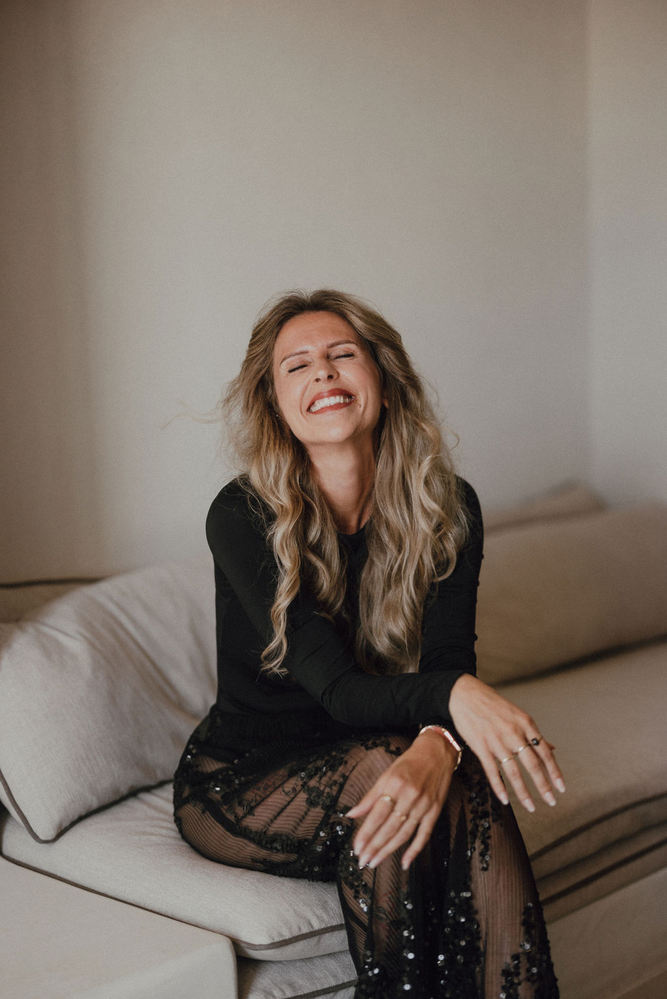
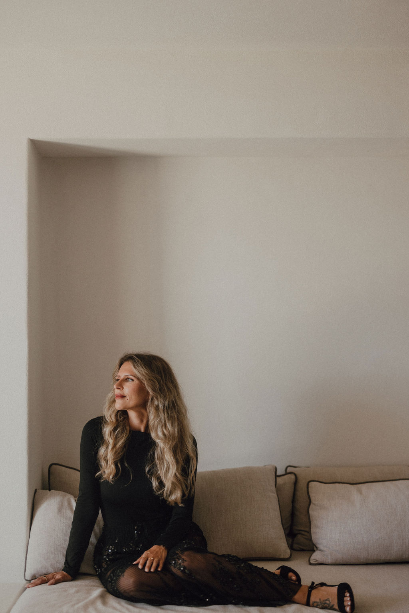

<title>brandyourvoice Link in Bio</title>
<meta name="claude:viewport-fit-sides" content="cover">
<link rel="stylesheet" href="https://fonts.googleapis.com/css2?family=Cormorant+Garamond:ital,wght@0,500;0,600;1,500&family=Open+Sans:wght@300;400;600&display=swap">
<style>
  /* Layout: eine schmale Handy-Spalte. Foto im Bogen, Kacheln zum Wischen, ein dunkelblauer Podcast-Block als einziger lauter Moment. */
  :root {
    --grund: #f2eeed;      /* neutrale Hauptfarbe */
    --papier: #fafafa;
    --tinte: #121212;
    --tinte-leise: #5c5560;
    --blau: #221686;       /* Podcast-Block, Links */
    --flieder: #e6c7ff;
    --flieder-hell: #f2e1ff;
    --pink: #ffc9ff;
    --gelb: #fefea8;
    --himmel: #c6d8f5;
    --auf-blau: #fafafa;
    --auf-blau-leise: #c9c4ef;
    --linie: #ddd5d6;
    --display: "Cormorant Garamond", "Iowan Old Style", Georgia, serif;
    --text: "Open Sans", "Segoe UI", Helvetica, Arial, sans-serif;
    --rand: max(16px, env(safe-area-inset-left, 0px));
    --rand-r: max(16px, env(safe-area-inset-right, 0px));
  }
  * { box-sizing: border-box; }
  body { background: var(--grund); color: var(--tinte); font-family: var(--text); font-size: 16px; line-height: 1.5; }
  a { color: inherit; text-decoration: none; }
  a:focus-visible, button:focus-visible { outline: 3px solid var(--blau); outline-offset: 3px; border-radius: 12px; }
  .seite { max-width: 460px; margin: 0 auto; padding-block: 20px 36px; display: flex; flex-direction: column; gap: 32px; }
  .g { padding-left: var(--rand); padding-right: var(--rand-r); }

  /* Kopf */
  .kopf { display: flex; flex-direction: column; align-items: center; gap: 14px; text-align: center; }
  .entwurf { align-self: flex-end; font-size: 11px; letter-spacing: .12em; text-transform: uppercase; background: var(--gelb); padding: 4px 10px; border-radius: 99px; }
  .bogen { width: 62%; aspect-ratio: 4 / 5; max-width: 100%; border-radius: 999px 999px 18px 18px; overflow: hidden; background: var(--flieder-hell); }
  .bogen img { width: 100%; height: 100%; object-fit: cover; object-position: 50% 30%; display: block; }
  h1 { font-family: var(--display); font-weight: 500; font-size: 44px; line-height: 1; margin: 6px 0 0; }
  .rolle { font-size: 13px; letter-spacing: .14em; text-transform: uppercase; color: var(--tinte-leise); margin: 0; }
  .satz { font-family: var(--display); font-style: italic; font-size: 23px; line-height: 1.25; margin: 0; max-width: 18em; text-wrap: balance; }
  .kanaele { display: flex; gap: 10px; }
  .kanaele a { width: 46px; height: 46px; border-radius: 50%; background: var(--papier); border: 1px solid var(--linie); display: grid; place-items: center; }
  .kanaele svg { width: 20px; height: 20px; }

  /* Kacheln zum Wischen */
  .abschnitt-kopf { display: flex; justify-content: space-between; align-items: baseline; margin-bottom: 12px; }
  h2 { font-family: var(--display); font-weight: 600; font-size: 26px; line-height: 1.1; margin: 0; }
  .pfeile { display: flex; gap: 6px; }
  .pfeile button { width: 36px; height: 36px; border-radius: 50%; border: 1px solid var(--linie); background: var(--papier); color: var(--tinte); font-size: 16px; cursor: pointer; }
  .band { display: flex; gap: 12px; overflow-x: auto; scroll-snap-type: x mandatory; scroll-padding-left: var(--rand); padding-left: var(--rand); padding-right: var(--rand-r); padding-bottom: 4px; scrollbar-width: none; }
  .band::-webkit-scrollbar { display: none; }
  .kachel { flex: 0 0 74%; aspect-ratio: 4 / 5; scroll-snap-align: start; border-radius: 22px; padding: 20px; display: flex; flex-direction: column; justify-content: flex-end; gap: 8px; position: relative; overflow: hidden; color: var(--tinte); }
  .kachel .marke { position: absolute; top: 18px; left: 20px; font-size: 11px; letter-spacing: .14em; text-transform: uppercase; }
  .kachel h3 { font-family: var(--display); font-weight: 600; font-size: 30px; line-height: 1.02; margin: 0; text-wrap: balance; }
  .kachel p { margin: 0; font-size: 14px; line-height: 1.45; }
  .kachel .los { margin-top: 6px; align-self: flex-start; font-size: 13px; font-weight: 600; background: var(--tinte); color: var(--papier); padding: 9px 16px; border-radius: 99px; }
  .k-gelb { background: var(--gelb); }
  .k-flieder { background: var(--flieder); }
  .k-himmel { background: var(--himmel); }
  .k-foto { color: var(--papier); }
  .k-foto img { position: absolute; inset: 0; width: 100%; height: 100%; object-fit: cover; }
  .k-foto::after { content: ""; position: absolute; inset: 35% 0 0; background: linear-gradient(to bottom, transparent, var(--tinte)); opacity: .82; }
  .k-foto > *:not(img) { position: relative; z-index: 1; }
  .k-foto .marke { position: absolute; background: var(--papier); color: var(--tinte); padding: 4px 10px; border-radius: 99px; top: 16px; left: 16px; }
  .k-foto .los { background: var(--papier); color: var(--tinte); }
  .punkte { display: flex; justify-content: center; gap: 6px; margin-top: 12px; }
  .punkte span { width: 7px; height: 7px; border-radius: 50%; background: var(--linie); transition: width .2s, background .2s; }
  .punkte span.an { width: 20px; border-radius: 99px; background: var(--tinte); }

  /* Podcast */
  .podcast { background: var(--blau); color: var(--auf-blau); border-radius: 26px; padding: 22px 20px; display: flex; flex-direction: column; gap: 16px; }
  .podcast .auge { font-size: 11px; letter-spacing: .14em; text-transform: uppercase; color: var(--gelb); margin: 0; }
  .podcast h2 { font-size: 30px; font-weight: 500; }
  .podcast .show { margin: 0; font-size: 13px; color: var(--auf-blau-leise); }
  .spieler { display: flex; align-items: center; gap: 14px; }
  .play { flex: none; width: 58px; height: 58px; border-radius: 50%; border: 0; background: var(--gelb); color: var(--blau); cursor: pointer; display: grid; place-items: center; }
  .play svg { width: 22px; height: 22px; }
  .spur { flex: 1; min-width: 0; display: flex; flex-direction: column; gap: 8px; }
  .balken { height: 5px; border-radius: 99px; background: var(--auf-blau-leise); overflow: hidden; }
  .balken i { display: block; height: 100%; width: 0%; background: var(--gelb); border-radius: 99px; }
  .hinweis { font-size: 12px; color: var(--auf-blau-leise); margin: 0; }
  .wo { display: flex; flex-wrap: wrap; gap: 8px; }
  .wo a { font-size: 13px; font-weight: 600; border: 1px solid var(--auf-blau-leise); padding: 8px 14px; border-radius: 99px; }

  /* Links */
  .links { display: flex; flex-direction: column; gap: 10px; }
  .links a { display: flex; align-items: center; gap: 14px; background: var(--papier); border: 1px solid var(--linie); border-radius: 18px; padding: 15px 18px; }
  .links svg { width: 20px; height: 20px; flex: none; }
  .links b { font-weight: 600; display: block; }
  .links small { color: var(--tinte-leise); font-size: 13px; }
  .links .pf { margin-left: auto; font-size: 18px; }
  .links span { min-width: 0; }

  footer { text-align: center; font-size: 13px; color: var(--tinte-leise); display: flex; flex-direction: column; gap: 6px; }
  footer nav { display: flex; justify-content: center; gap: 18px; }
  footer a { text-decoration: underline; text-underline-offset: 3px; }
  @media (prefers-reduced-motion: reduce) { .band { scroll-behavior: auto; } .punkte span { transition: none; } }
</style>

<main class="seite">

  <header class="kopf g">
    <span class="entwurf">Entwurf</span>
    <div class="bogen"></div>
    <h1>Sarah</h1>
    <p class="rolle">Gründerin von brandyourvoice</p>
    <p class="satz">Am Anfang steht das Wort.</p>
    <nav class="kanaele" aria-label="Kanäle">
      <a href="https://www.instagram.com/brandyourvoice/" target="_blank" rel="noopener" aria-label="Instagram">
        <svg viewBox="0 0 24 24" fill="none" stroke="currentColor" stroke-width="1.8"><rect x="3" y="3" width="18" height="18" rx="5"/><circle cx="12" cy="12" r="4.2"/><circle cx="17.4" cy="6.6" r="1" fill="currentColor" stroke="none"/></svg>
      </a>
      <a href="https://www.linkedin.com/in/brandyourvoice-sarah/" target="_blank" rel="noopener" aria-label="LinkedIn">
        <svg viewBox="0 0 24 24" fill="currentColor"><rect x="3" y="9" width="4" height="12"/><circle cx="5" cy="5" r="2.2"/><path d="M10 9h3.8v1.8c.7-1.2 2-2.1 3.9-2.1 3 0 4.3 1.9 4.3 5.2V21h-4v-6.300c0-1.600-.6-2.500-1.900-2.500-1.400 0-2.100 1-2.100 2.600V21h-4z"/></svg>
      </a>
      <a href="https://brandyourvoice.de/podcast/" target="_blank" rel="noopener" aria-label="Podcast">
        <svg viewBox="0 0 24 24" fill="none" stroke="currentColor" stroke-width="1.8" stroke-linecap="round"><rect x="9" y="3" width="6" height="11" rx="3"/><path d="M5.500 11.500a6.500 6.500 0 0 0 13 0M12 18v3"/></svg>
      </a>
    </nav>
  </header>

  <section aria-labelledby="t-kacheln">
    <div class="abschnitt-kopf g">
      <h2 id="t-kacheln">Wisch dich durch</h2>
      <div class="pfeile">
        <button type="button" id="zurueck" aria-label="Vorherige Kachel">←</button>
        <button type="button" id="weiter" aria-label="Nächste Kachel">→</button>
      </div>
    </div>
    <div class="band" id="band">
      <a class="kachel k-gelb" href="https://brandyourvoice.de/copywriting-masterclass/" target="_blank" rel="noopener">
        <span class="marke">Für 0 €</span>
        <h3>Copywriting Masterclass</h3>
        <p>90 Minuten, die dir zeigen, ob Copywriting 2.0 zu dir passt.</p>
        <span class="los">Platz sichern</span>
      </a>
      <a class="kachel k-foto" href="https://brandyourvoice.de/copywriting-beratung/" target="_blank" rel="noopener">
        
        <span class="marke">Mentoring</span>
        <h3>Clear Words. Schreib dich frei!</h3>
        <p>Copywriting lernen und dein eigenes Business aufbauen.</p>
        <span class="los">Mehr erfahren</span>
      </a>
      <a class="kachel k-flieder" href="https://brandyourvoice.de/brandyourai-warteliste/" target="_blank" rel="noopener">
        <span class="marke">Warteliste</span>
        <h3>brandyourAI</h3>
        <p>KI, die klingt wie du. Nicht wie ein Roboter mit Schreibkrampf.</p>
        <span class="los">Auf die Warteliste</span>
      </a>
      <a class="kachel k-foto" href="https://brandyourvoice.de/erfolgsgeschichten/" target="_blank" rel="noopener">
        
        <span class="marke">Echte Stimmen</span>
        <h3>Erfolgs&shy;geschichten</h3>
        <p>Was unsere Teilnehmerinnen erzählen.</p>
        <span class="los">Zu den Stories</span>
      </a>
      <a class="kachel k-himmel" href="https://brandyourvoice.de/" target="_blank" rel="noopener">
        <span class="marke">Newsletter</span>
        <h3>Prosecco-Date</h3>
        <p>Jeden Sonntag ehrliche Einblicke hinter die Kulissen, direkt in dein Postfach.</p>
        <span class="los">Anmelden</span>
      </a>
    </div>
    <div class="punkte" id="punkte" aria-hidden="true"></div>
  </section>

  <section class="g" aria-labelledby="t-podcast">
    <div class="podcast">
      <p class="auge">Neueste Folge</p>
      <h2 id="t-podcast">#132 Dein Matcha ist keine Altersvorsorge</h2>
      <p class="show">brandyourvoice. unfiltered · jeden Montag neu</p>
      <div class="spieler">
        <button class="play" type="button" id="play" aria-label="Folge abspielen" aria-pressed="false">
          <svg viewBox="0 0 24 24" fill="currentColor" id="play-icon"><path d="M7 4.500v15l13-7.500z"/></svg>
        </button>
        <div class="spur">
          <div class="balken"><i id="fortschritt"></i></div>
          <p class="hinweis">Vorschau ohne Ton. Auf der fertigen Seite läuft die Folge direkt hier.</p>
        </div>
      </div>
      <div class="wo">
        <a href="https://brandyourvoice.de/podcast/" target="_blank" rel="noopener">Alle Folgen</a>
        <a href="https://open.spotify.com/show/6Txu7VY2je8ID1tLI2Utla" target="_blank" rel="noopener">Spotify</a>
        <a href="https://podcasts.apple.com/us/podcast/clear-words-to-go/id1759317265" target="_blank" rel="noopener">Apple Podcasts</a>
      </div>
    </div>
  </section>

  <nav class="links g" aria-label="Weitere Links">
    <a href="https://brandyourvoice.de/" target="_blank" rel="noopener">
      <svg viewBox="0 0 24 24" fill="none" stroke="currentColor" stroke-width="1.8"><circle cx="12" cy="12" r="9"/><path d="M3 12h18M12 3c3 3.200 3 14.800 0 18M12 3c-3 3.200-3 14.800 0 18"/></svg>
      <span><b>Website</b><small>brandyourvoice.de</small></span>
      <span class="pf">→</span>
    </a>
    <a href="https://www.linkedin.com/in/brandyourvoice-sarah/" target="_blank" rel="noopener">
      <svg viewBox="0 0 24 24" fill="currentColor"><rect x="3" y="9" width="4" height="12"/><circle cx="5" cy="5" r="2.2"/><path d="M10 9h3.8v1.8c.7-1.2 2-2.1 3.9-2.1 3 0 4.3 1.9 4.3 5.2V21h-4v-6.300c0-1.600-.6-2.500-1.900-2.500-1.400 0-2.100 1-2.100 2.600V21h-4z"/></svg>
      <span><b>LinkedIn</b><small>Sarah persönlich, mit Klartext</small></span>
      <span class="pf">→</span>
    </a>
  </nav>

  <footer class="g">
    <nav aria-label="Rechtliches">
      <a href="https://brandyourvoice.de/impressum/" target="_blank" rel="noopener">Impressum</a>
      <a href="https://brandyourvoice.de/datenschutzerklaerung/" target="_blank" rel="noopener">Datenschutz</a>
    </nav>
    <span>© brandyourvoice</span>
  </footer>
</main>

<script>
  // Kacheln: Punkte und Pfeile
  const band = document.getElementById('band');
  const kacheln = [...band.children];
  const punkte = document.getElementById('punkte');
  kacheln.forEach(() => punkte.appendChild(document.createElement('span')));
  const schritt = () => kacheln[1].offsetLeft - kacheln[0].offsetLeft;
  function aktuell() {
    const amEnde = band.scrollLeft + band.clientWidth >= band.scrollWidth - 4;
    return amEnde ? kacheln.length - 1 : Math.round(band.scrollLeft / schritt());
  }
  function zeichne() { const i = aktuell(); [...punkte.children].forEach((p, n) => p.classList.toggle('an', n === i)); }
  band.addEventListener('scroll', zeichne, { passive: true });
  const ruhig = matchMedia('(prefers-reduced-motion: reduce)').matches;
  const geh = d => band.scrollBy({ left: d * schritt(), behavior: ruhig ? 'auto' : 'smooth' });
  document.getElementById('weiter').addEventListener('click', () => geh(1));
  document.getElementById('zurueck').addEventListener('click', () => geh(-1));
  zeichne();

  // Podcast: Vorschau des Players, ohne Ton
  const play = document.getElementById('play'), icon = document.getElementById('play-icon'), balken = document.getElementById('fortschritt');
  let laeuft = false, stand = 0, takt = null;
  play.addEventListener('click', () => {
    laeuft = !laeuft;
    play.setAttribute('aria-pressed', laeuft);
    play.setAttribute('aria-label', laeuft ? 'Folge pausieren' : 'Folge abspielen');
    icon.innerHTML = laeuft ? '<path d="M7 4.500h3.500v15H7zM13.500 4.500H17v15h-3.500z"/>' : '<path d="M7 4.500v15l13-7.500z"/>';
    clearInterval(takt);
    if (laeuft) takt = setInterval(() => { stand = (stand + 0.4) % 100; balken.style.width = stand + '%'; }, 120);
  });
</script>
